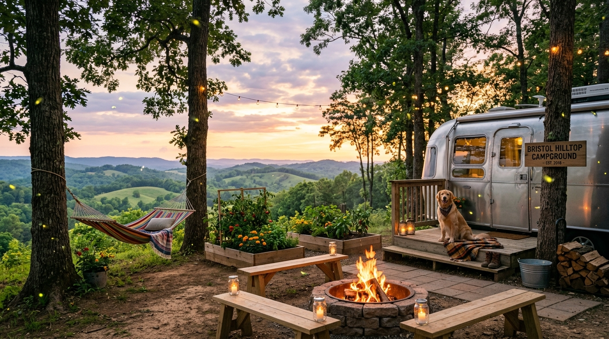

There comes a point when the frantic hum of urban life simply asks too much. Endless highway traffic, crowded parking garages, soaring utility bills, and the confinement of shared apartment walls slowly wear down your peace of mind. You catch yourself yearning for something older, simpler, and more genuine: the aroma of damp mountain pine carried on a morning breeze, the gentle blink of fireflies dancing across pasture grass at dusk, and the deep stillness of an Appalachian night sky unblemished by city smog.
That timeless longing is what makes country living Bristol TN style so deeply appealing. Tucked into the rolling ridgelines of Sullivan County in Upper East Tennessee, life naturally settles into a calm, unhurried cadence. Perched along a scenic crest on Hilltop Street, Bristol Hilltop Camping bridges the gap between authentic mountain tranquility and modern convenience. Whether you seek an affordable seasonal retreat or a permanent downsized lifestyle on a monthly or yearly camper lot, here is your guide to the rewarding hilltop camping lifestyle Bristol has to offer.
Looking for an Affordable Mountain Sanctuary?
Experience authentic country tranquility with all the comforts of home. Long-term and monthly full hookup lots are available with 30/50-amp power, city water, and direct sewer. Call Bristol Hilltop Camping at (423) 383-5373 for current lot availability.
What Country Living on the Hilltop Actually Looks Like Day-to-Day
When people consider moving to an extended-stay camper lot, they often wonder what the daily routine really feels like. It is neither rugged backcountry survival nor sterile suburban confinement; instead, it is an intentional, grounding middle ground. Unlike transient campgrounds where travelers rush in and out every few days, an extended-stay community moves with a calm, settled rhythm.
Because your camper rests on a dedicated, level pad with full municipal hookups, you never spend your hours managing wastewater tanks or rationing fresh water. You cook hot meals in your galley, take comfortable showers, charge devices, and run climate control just like in a traditional home. The crucial difference is that your front porch opens to the Appalachian outdoors. You step outside directly into crisp mountain air, watch the ridgelines change colors throughout the day, and relax without the sirens, elevators, or traffic noise of city life.
Morning Routines: Coffee with Mountain Views, Birdsong, and Valley Mist
Mornings on the Hilltop offer a peaceful quietude that city dwellers rarely get to experience. Long before town awakens, dawn outlines the eastern Blue Ridge horizon in delicate shades of amber, rose, and lavender.
One of the region's most mesmerizing natural sights is the morning valley mist. Cool overnight air settles into the river hollows below, creating a blanket of white fog across the basin. Standing atop the Hilltop, you look out over what appears to be an ocean of clouds, with mountain summits rising like green islands in the sun. Pouring a freshly brewed cup of coffee and sitting outside to the melodies of Carolina chickadees, eastern bluebirds, and pileated woodpeckers is the ultimate way to start your morning.
The Four Seasons on the Hilltop: Nature's Ever-Changing Canvas
A key highlight of simple living Appalachian mountains style is witnessing four distinct, beautiful seasons:
- Spring Wildflowers: Trilliums, bloodroot, and mountain laurel bloom along slopes while dogwoods and purple redbuds burst open. Crisp 60-degree breezes make it ideal to open your camper windows wide.
- Summer Fireflies: Warm sunny afternoons yield to refreshing mountain breezes. At dusk, thousands of synchronous lightning bugs blink across the fields and tree lines, creating a mesmerizing natural light show.
- Fall Foliage: In October and November, sugar maples, scarlet oaks, and sourwoods ignite in brilliant shades of gold, orange, and crimson, filling the air with the rich aroma of woodsmoke and autumn leaves.
- Cozy Winter: With leaves fallen, panoramic mountain vistas open up across the ridges. East Tennessee winters remain relatively mild; light snow dustings melt quickly under sunny skies, making indoor camper life cozy and warm.
Outdoor Activities Right from Your Lot: Hiking, Fishing at South Holston Lake & Gardening
Choosing campground life Tennessee style places outdoor adventure right at your camper steps:
- South Holston Lake: Minutes away, this mountain reservoir offers over 160 miles of forested shoreline for pontoon boating, paddleboarding, kayaking, and bass fishing.
- World-Class Fly Fishing: The South Holston River tailwater is recognized as one of North America's premier wild brown trout fisheries, supporting up to 10,000 trout per river mile.
- Appalachian Trail Access: Nearby trailheads in Damascus and Roan Mountain provide easy day hikes across rhododendron balds and rugged mountain ridgelines.
- Steele Creek Park: Bristol's 2,200-acre park features over 24 miles of hiking trails, a serene 54-acre lake, and disc golf courses.
- Lot Gardening: Many extended-stay campers enjoy cultivating container gardens with potted cherry tomatoes, bell peppers, rosemary, and mint right outside their patio doors.
Pets on the Hilltop: Dog-Friendly Camping and Space to Roam
Cramped city apartments and endless concrete sidewalks can be difficult on pets. On the Hilltop, pet companionship becomes an everyday pleasure. Dogs thrive in the open mountain environment, enjoying pleasant walks along quiet country roads and plenty of green space to explore.
The campground is pet-friendly, welcoming responsible owners who value outdoor life. Standard leash etiquette and prompt cleanup ensure a clean, enjoyable space where campers and four-legged companions live happily side by side.
The Sounds of Country: NASCAR Engines Echoing Through the Hills
True country living has an unmistakable acoustic charm: whispering pines, rustling oak leaves, singing cardinals, and the distant hum of a tractor cutting valley hay. But Bristol features an iconic sound found nowhere else.
Twice each year, during the spring Food City 500 and the autumn Night Race, the hills resonate with the thunderous roar of 40 NASCAR Cup Series engines echoing from Bristol Motor Speedway, located just 0.9 miles away. It provides an unbeatable balance: peaceful country solitude for fifty weeks of the year, paired with a front-row auditory seat to the world's fastest half-mile when race weekend arrives.
Claim Your Appalachian Basecamp
Enjoy guaranteed year-round occupancy with zero race weekend displacement. Call Bristol Hilltop Camping at (423) 383-5373 to discuss monthly and annual camper site reservations.
Neighbors Become Family: The Community Spirit of Long-Term Campground Living
Modern suburban developments and apartment buildings often lead to social isolation, where residents rarely know their neighbors. In contrast, extended-stay campground living revives the warmth of genuine community.
On the Hilltop, neighbors look out for one another. If a summer rainstorm rolls over the ridge while you are in town, a neighbor will check your awning. If you need a tool or a spotter backing into a site, someone is always glad to help. Evening strolls naturally turn into relaxed chats by the firepit, swapping travel stories and tips on camper living. It creates a welcoming, respectful community of retirees, remote workers, and outdoor lovers.
Farm-to-Table: Nearby Farmers Markets, Local Produce & Ridgewood Barbecue
Simple living in East Tennessee extends to the food on your plate. Sullivan County's agricultural roots make sourcing fresh, local produce both easy and enjoyable.
Visit the State Street Farmers Market in downtown Bristol for vine-ripened Grainger County tomatoes, sweet corn, wildflower honey, and artisan breads. When you want legendary regional dining, take a quick drive to Ridgewood Barbecue in nearby Bluff City. Known nationwide and featured on television food specials, their signature hickory-smoked sliced pork ham served with sweet-tangy sauce and fresh-cut fries is a must-try local tradition.
Night Sky: Stargazing Away from City Lights and Firepit Evenings
City lights drown out the grandeur of the night sky. On the Hilltop, set back from heavy commercial development, the stars shine with remarkable clarity.
On clear nights, you can recline in your camp chair and see the arch of the Milky Way spanning overhead. Spotting constellations and watching meteor showers becomes an effortless evening pastime. Gather around a crackling hardwood firepit, listen to the quiet breeze in the trees, and unwind with the peace that only mountain nights provide.
Why People Are Leaving City Apartments for Hilltop Lots
Trading conventional apartments for extended camper living has become a popular path toward greater freedom and lower stress:
- Substantial Cost Savings: Escalating apartment rents and utility fees strain monthly budgets. A monthly camper lot cuts housing costs significantly.
- No State Income Tax: Tennessee does not tax wage income, allowing remote workers and mobile professionals to retain more earnings.
- Clutter-Free Simplicity: Downsizing into a camper encourages intentional living, trading excess material possessions for mental peace.
- Mobile Independence: You own your dwelling and keep the flexibility to move your home whenever life or travel calls.
Bristol's Small-Town Charm: State Street, Live Music & Historic Roots
Hilltop country living gives you peaceful seclusion without feeling cut off from modern culture and conveniences. Historic downtown Bristol is only ten minutes away.
Downtown State Street is famously split down the center by the Tennessee-Virginia state line, letting you walk in two states at once while visiting local restaurants, coffee shops, and breweries like State Street Brewing and Michael Waltrip Brewing Co. Bristol is also celebrated as the Birthplace of Country Music, home to the 1927 Bristol Sessions and the Smithsonian-affiliated Birthplace of Country Music Museum, ensuring live bluegrass and Americana music are always close by.
Start Your Simple Living Chapter on the Hilltop
Trade congested streets and noisy apartment buildings for fresh air, starry skies, and panoramic mountain views. Inquire about monthly and seasonal sites by calling Bristol Hilltop Camping at (423) 383-5373 today.
Frequently Asked Questions About Country Life at Bristol Hilltop Camping
Daily country life on the Hilltop is defined by quiet mountain mornings, open Appalachian vistas, fresh breezes, and a peaceful, self-paced routine. Residents wake up to birdsong and drifting valley fog, enjoy morning coffee with panoramic ridge views, and unwind around evening campfires under clear starry skies. It provides all the serenity of rural homesteading combined with modern full-hookup conveniences.
Sites are equipped with heavy-duty 30-amp and 50-amp electrical pedestals, continuous pressurized municipal drinking water, dedicated in-ground sewer hookups, and on-site trash disposal. Sites are level, spacious, and engineered to comfortably accommodate motorhomes, travel trailers, and fifth wheels alongside tow vehicles.
Yes. The elevated ridge location provides clear lines of sight to cellular towers and unobstructed southern skies, making cellular hotspots and satellite internet systems like Starlink exceptionally fast and reliable. Many residents work full-time corporate, freelance, or remote positions while enjoying the peaceful Appalachian mountains.
Yes, pets are warmly welcomed. Dogs and cats flourish in the open mountain environment, enjoying pleasant morning walks along peaceful roads and ample green space compared to cramped urban apartments. Campers are simply asked to keep pets on a leash and clean up after them.
East Tennessee enjoys a moderate four-season mountain climate. While winters bring crisp freezing nights and occasional light snow dustings across the ridges, prolonged sub-zero deep freezes are rare. With standard RV winter prep—such as a heated freshwater hose, RV skirt, and supplemental ceramic or propane heat—year-round country living on the Hilltop is comfortable and enjoyable.
Reserving your monthly or yearly camper lot is simple. Call Bristol Hilltop Camping directly at (423) 383-5373. Our friendly on-site team will review your camper dimensions, electrical requirements (30 or 50 amp), and desired move-in date to help you secure the ideal hilltop site.